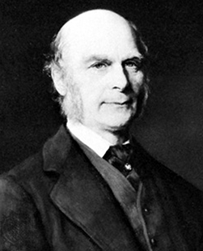

개념 학습
회귀 알고리즘
선형 회귀는 오차에 기반한 학습 방법으로 종속변수와 독립 변수의 관계를 잘 파악하는 직선을 찾는 방법이다. 관계를 잘 파악한다는 것은 직선이 데이터의 분포를 잘 설명하고, 예측한 값과 실젯값의 차이인 오차가 가장 작다는 것을 의미한다. 따라서 선형 회귀의 목표는 오차를 최소화하는 직선을 찾는 것이다.
선형 회귀
회귀(regression)
회귀라는 용어는 ‘평균으로 돌아간다’는 의미이다. 영국의 유전학자 프랜시스 골턴이 자녀의 키와 부모의 키의 상관관계를 연구하면서 밝혀낸 자연 현상이다. 골턴은 부모와 자녀의 키는 선형적 관계가 있으나 평균으로 돌아가려는 경향(회귀)이 있다는 사실을 알아냈다.
평균으로 돌아가려는 경향이 없다면 어떻게 될까? 키가 작은 부모의 자녀는 지속적으로 작아지고 키가 큰 부모의 자녀는 지속적으로 키가 커질 수 있다. 그러나 그렇지 않은 이유는 평균으로 돌아가려는 자연 현상 때문이다.
평균으로 돌아가려는 경향이 없다면 어떻게 될까? 키가 작은 부모의 자녀는 지속적으로 작아지고 키가 큰 부모의 자녀는 지속적으로 키가 커질 수 있다. 그러나 그렇지 않은 이유는 평균으로 돌아가려는 자연 현상 때문이다.

프랜시스 골턴
(Francis Galton, 1822~1911) 영국의 인류학자
(Francis Galton, 1822~1911) 영국의 인류학자